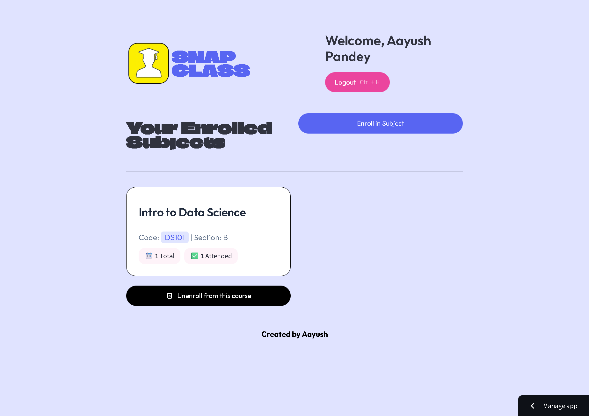
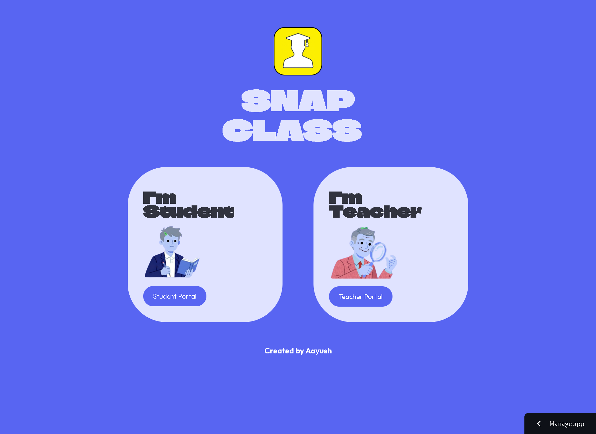
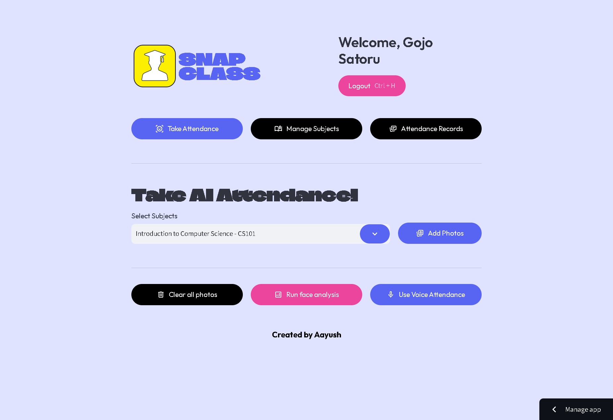
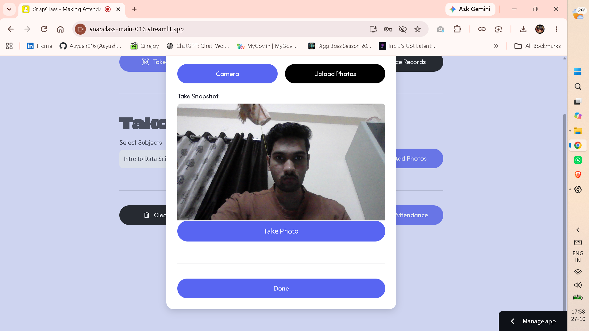
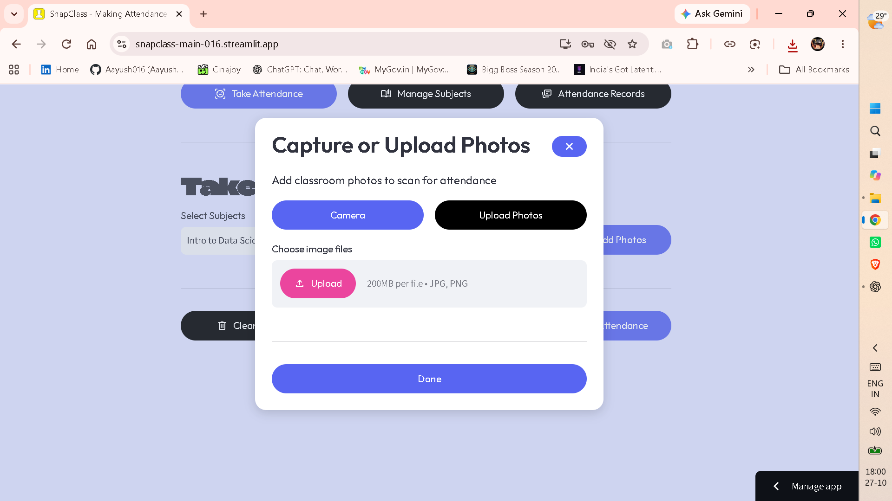
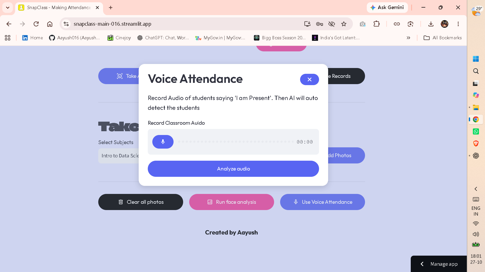
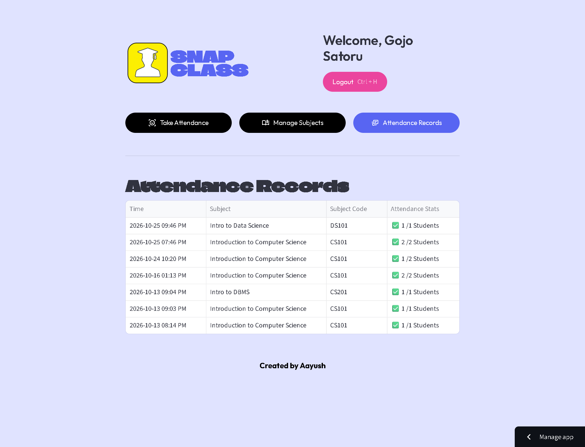
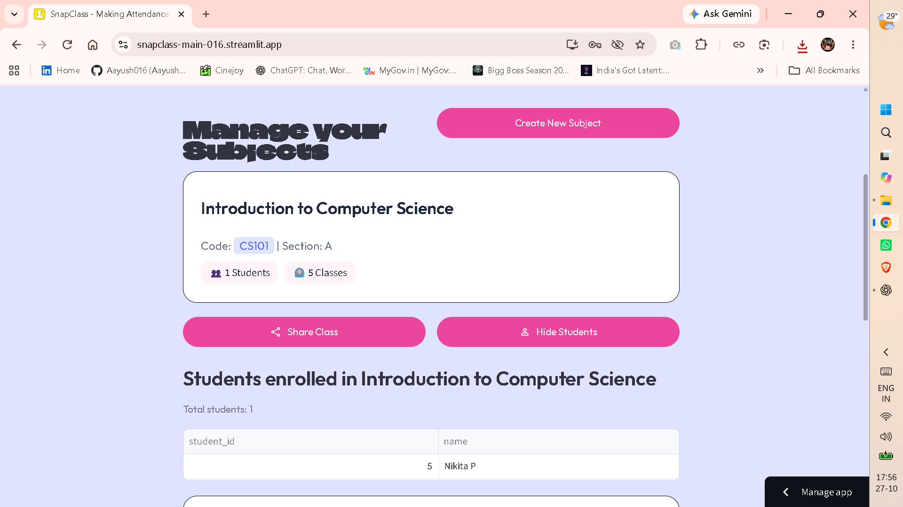

Choose a role
A friendly entry point gives teachers and students the right space from the start.
Project 02 · EdTech platform
A focused classroom workspace where teachers can run attendance their way and students can stay connected to every subject.

01 · Overview
Snapclass brings the everyday classroom loop into one clear place: students enrol in a subject, teachers maintain the class list, and attendance becomes a record that can be reviewed and reported on.
02 · The workflow
A friendly entry point gives teachers and students the right space from the start.
Teachers create subjects while students join the courses that belong to them.
Capture a class through camera, photos, uploads, or voice—whichever suits the moment.
Keep an organised history of records and surface attendance reports when they matter.
03 · What it enables
Choose the capture method that best fits a live classroom instead of forcing one rigid process.
Set up subjects, add students, and keep every class roster in a dedicated place.
Teacher and student dashboards focus each person on the actions and information they need.
Turn attendance moments into a viewable record, ready for follow-up and reporting.
04 · Product tour







05 · Try it live
Snapclass is live—step into the teacher or student experience.